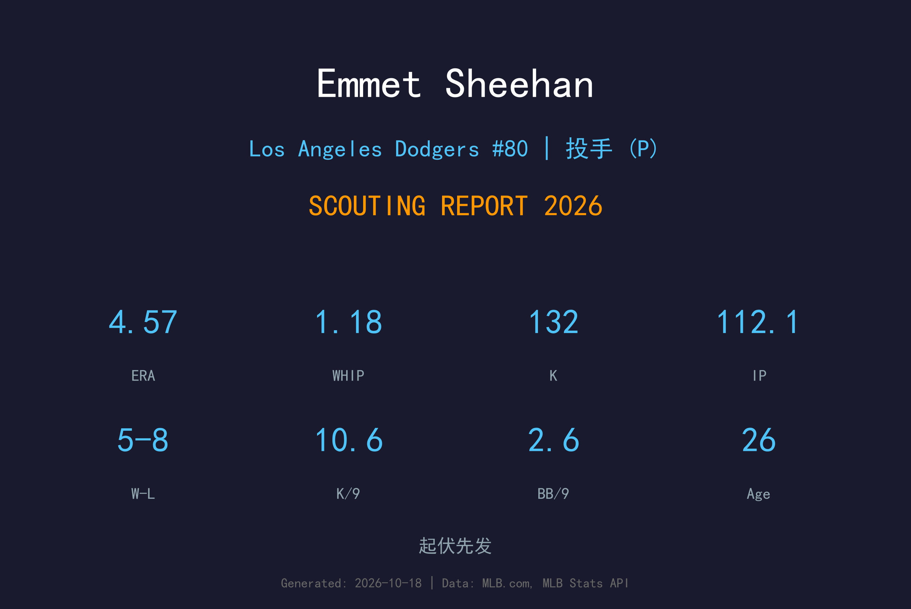
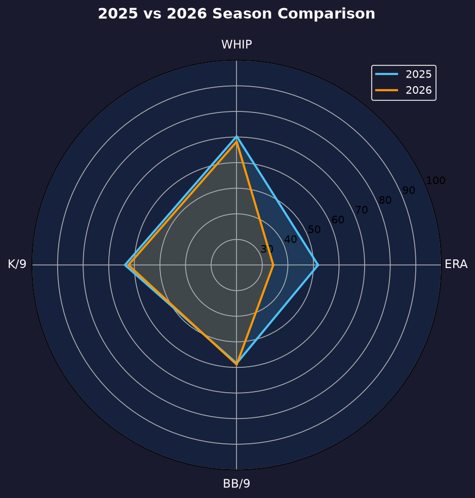
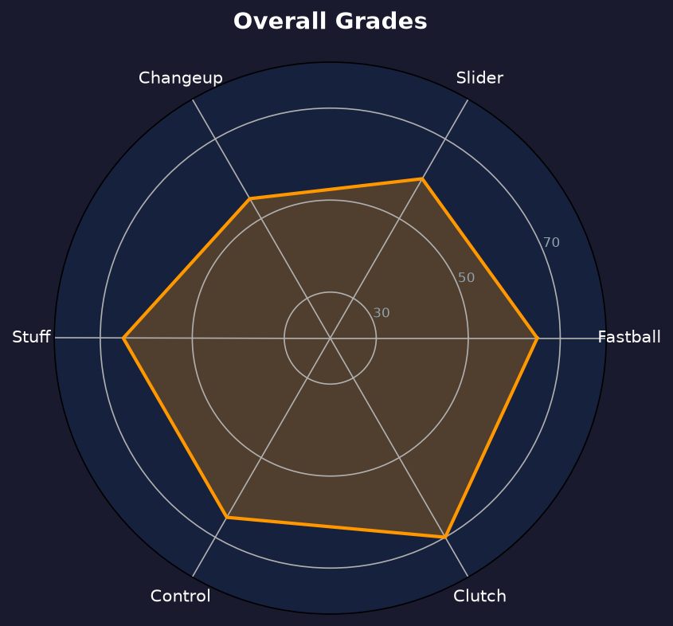

Los Angeles Dodgers #80 | 先发投手 | 右投 / 左打 | 大场面投手

Emmet Sheehan 是2023 年首秀 6 局无安打震惊联盟的大场面投手，2025 年世界大赛 18 局大战的无名英雄。2026 年他吃下 112.1 局、送出 132 次三振，成为道奇轮值里被低估的硬底子投手。
5胜8败、4.57 ERA 的成绩单看似平庸，但拆开看：K/BB 比 4.00 与 1.18 WHIP 都是轮值顶级水准，唯一的灾难来自 21 支被全垒打（1.68 HR/9）。他的速球三振能力从未消失，只是太常被轰。
26岁的 Sheehan 正处于"从潜力股到实力派"的转型期。2027 年他的目标是把 HR/9 压回 1.0 以下——只要做到，他就是道奇轮值的第四号人物。
对旧金山巨人投出 6 局无安打仅 2 保送，随后创下生涯开局连续 8.0 局无安打纪录，震惊全联盟。
伤愈复出后 73.1 局 2.82 ERA、0.97 WHIP；更在 2025 世界大赛 18 局大战中挺身而出，成为道奇夺冠的无名英雄之一。
112.1 局、132 次三振、K/BB 4.00，首次单季承担完整轮值工作量。

| 赛季 | GS | W-L | ERA | IP | SO | BB | WHIP | HR |
|---|---|---|---|---|---|---|---|---|
| 2025 | 12 | 6-3 | 2.82 | 73.1 | 89 | 22 | 0.97 | 7 |
| 2026 | 22 | 5-8 | 4.57 | 112.1 | 132 | 33 | 1.18 | 21 |
工作量从 73.1 暴增至 112.1 局，三振率保持 10+，但 HR/9 从 0.86 飙升至 1.68——这是 ERA 暴涨的全部原因。
主战球种，占全部配球的 42.8%，均速 94.4 mph。直上直下的四缝线速球，负责抢好球数与建立球数领先，是所有配球的基准。
常用武器，占全部配球的 29.3%，均速 86.6 mph。传统滑球横向位移锐利，是两好球后的主要挥空武器。
常用武器，占全部配球的 15.6%，均速 85.5 mph。变速球靠与速球的速差取命，主要用来对付反侧打者。
辅助配球，占全部配球的 12.3%，均速 77.7 mph。曲球落差大，用于改变打者视线高度与击球节奏。
1.68 HR/9 是道奇轮值最差，但 1.18 WHIP 却显示他并不常被上垒——这意味着他的失分几乎全部来自"零星的致命长打"。分析显示他的速球在 deep count 时容易被锁定，而 2026 年他被要求投更多局（workload 暴增 53%），疲劳期的失投球比例上升。这是可以修正的问题，而非天赋的退化。
K/BB 4.00 在道奇轮值中仅次于山本，2.64 BB/9 的控球同样是顶级。他的每局用球数（17.39）偏高，但这更多是三振型投手的特征而非效率低下。5-8 的战绩掩盖了他多次"优质先发却败投"的遗憾。
这是 Sheehan 职业生涯的第一个完整轮值赛季。从"玻璃人"（2024 整季报销）到"铁人"（112.1 局），他完成了职业生涯最重要的身份转换。21 轰是学费，132 次三振是答卷。

三振与控球兼备，只差压制被轰率的轮值中坚
B+ 级 / 轮值第四号
Emmet Sheehan 的2027赛季目标是降低 HR/9、把 ERA 压回 3.80 以下，坐稳轮值第四号。道奇轮值人才济济，但他的三振能力与大赛气质是独特的竞争优势。
2026：首个完整赛季 112.1 局、132K、5-8、4.57 ERA
2027：目标 150+ 局、HR/9 ≤1.0、ERA ≤3.80
2028+：若被轰率改善，可竞争轮值第三号或高薪中继
George Emmet Sheehan 出生于纽约市，成长于一个运动家庭——他的母亲 Maureen 曾在 Georgetown 大学打排球。高中毕业后，他进入 Boston College 效力三年，逐渐展现出顶级投手潜质。
2021 年 MLB 选秀，道奇在第 6 轮（总第 192 顺位）选中了他。进入职业体系后，他在 2A Tulsa 和 3A Oklahoma City 快速爬升，2023 年在小联盟缴出 2.43 ERA、102 K 的压制级数据。2023 年 6 月 16 日，他完成大联盟首秀——面对旧金山巨人投出 6 局无安打、仅 2 次保送，震惊联盟，更创下生涯开局连续 8.0 局无安打的纪录。
2024 年因右前臂炎症整季报销，但 2025 年伤愈复出后不仅用 73.1 局 2.82 ERA 证明实力，更在 2025 世界大赛的 18 局大战中挺身而出，成为道奇夺冠的无名英雄之一。场外的 Sheehan 以低调、专注著称，深受道奇投手教练团信任。他的母亲 Maureen 的排球背景，让他从小就理解"高个子运动员如何运用身体"——这是他 6'6" 身躯仍能维持丝滑投球动作的秘密。